5/5 CORRECTIVE SCENES PASSCurated Home Port v7 — Corrective ProofNarrow proof that bridge, customs and warehouse Survival failures are corrected, with matched net-loft and repair-crane material views.
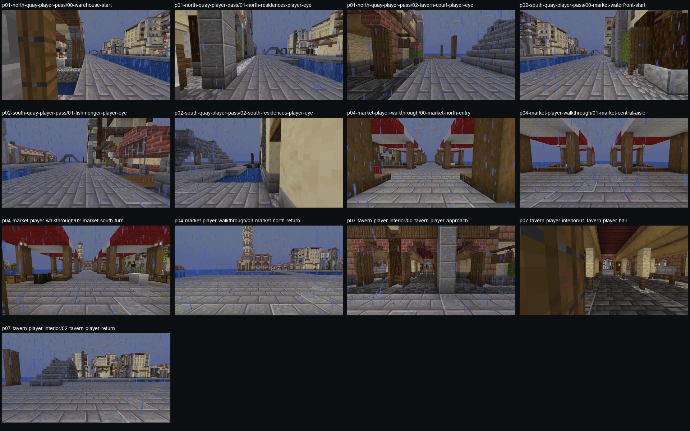BLOCKED — P0 FINDINGSCurated Venetian Home Port v6 — Route ReviewRoute-based cinematic, boat-height and Survival-player evidence. Quays, market and tavern pass; bridge, customs and warehouse routes expose blocking defects.
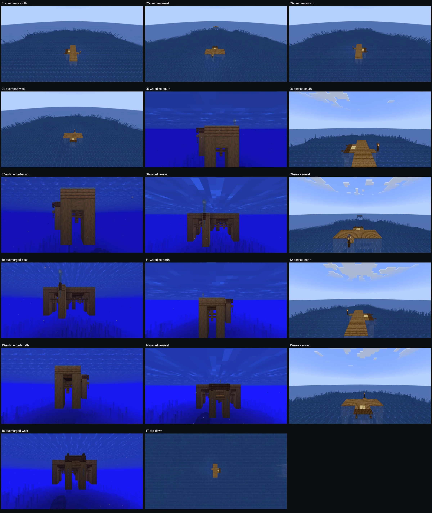ACCEPTABLE PROPOSALTransition — Main Straight v3First acceptable main-route proposal with attached pocket, guarded recovery, finalized seams and seabed-reaching supports.
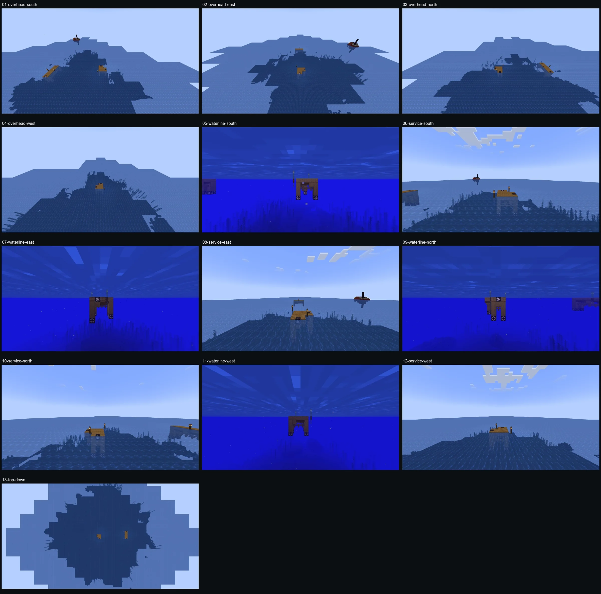LATEST SKELETONTransition — Main Corner v1Current active transition prototype. Functional grammar skeleton; not accepted production art.
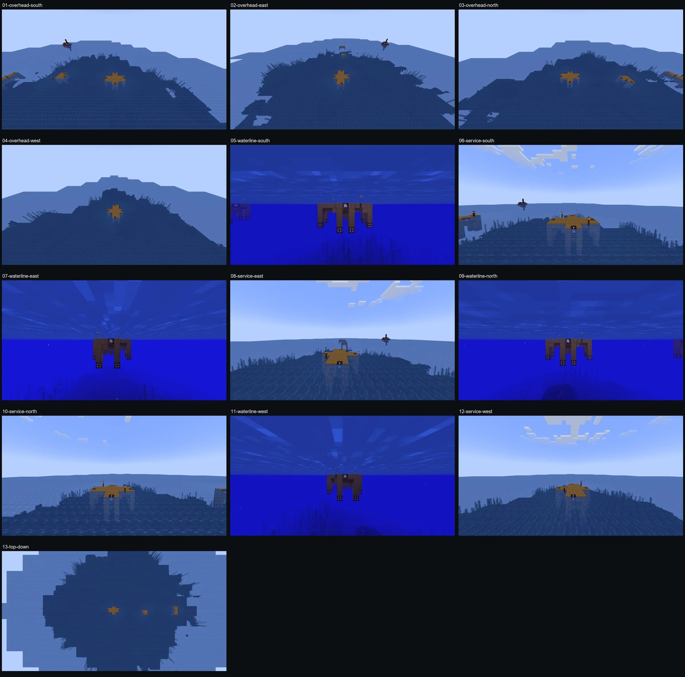LATEST SKELETONTransition — Work Landing v1Current active work-landing prototype. Architectural redesign is still required.
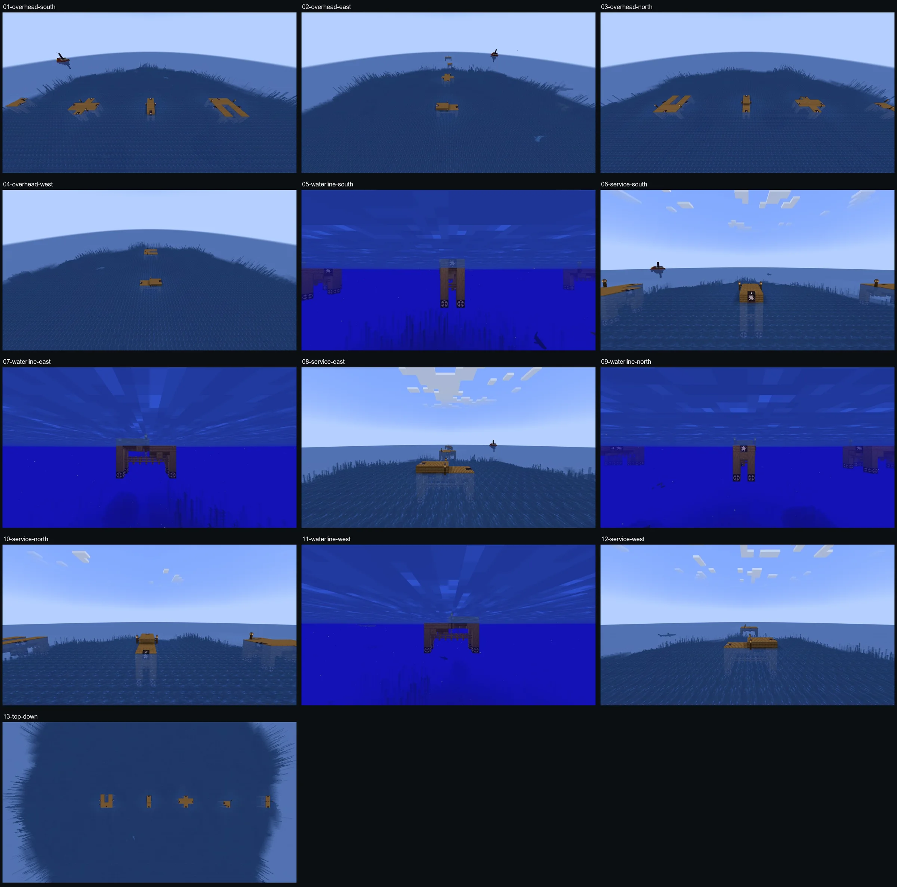LATEST SKELETONTransition — Ramp Up v1Current elevation-transition and path-clearance prototype.
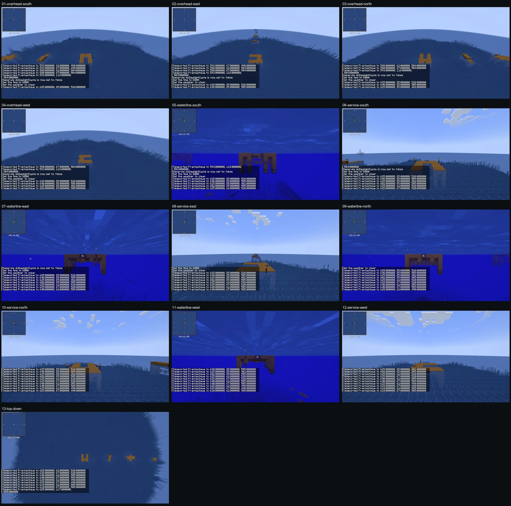LATEST SKELETONTransition — Boat Well v1Current working-water court and connector prototype.
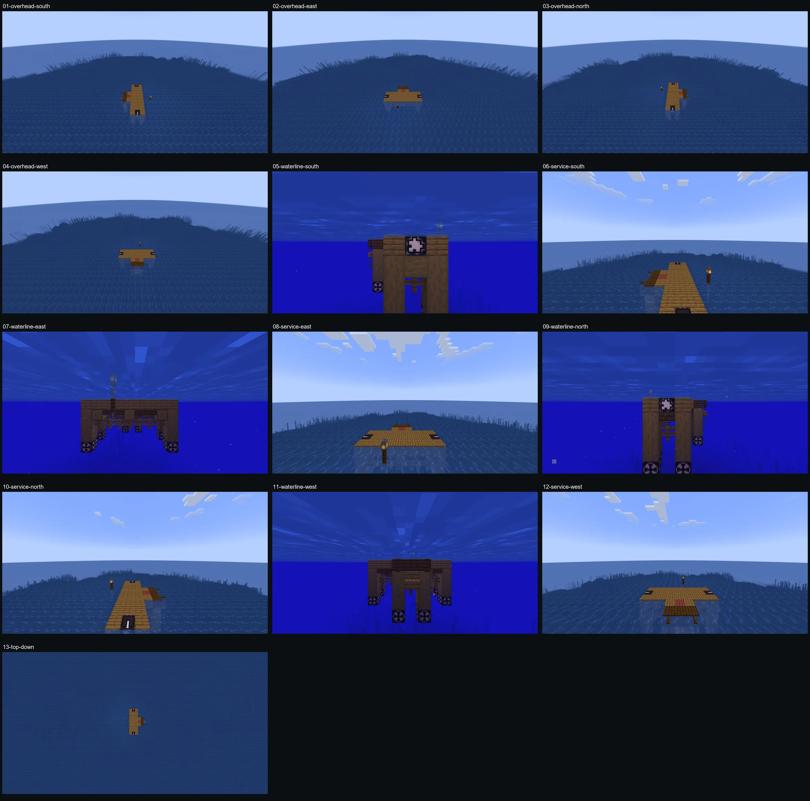SUPERSEDEDSuperseded Transition — Main Straight v2Replaced by v3 after review exposed detached lighting, visible markers and insufficient foundation evidence.
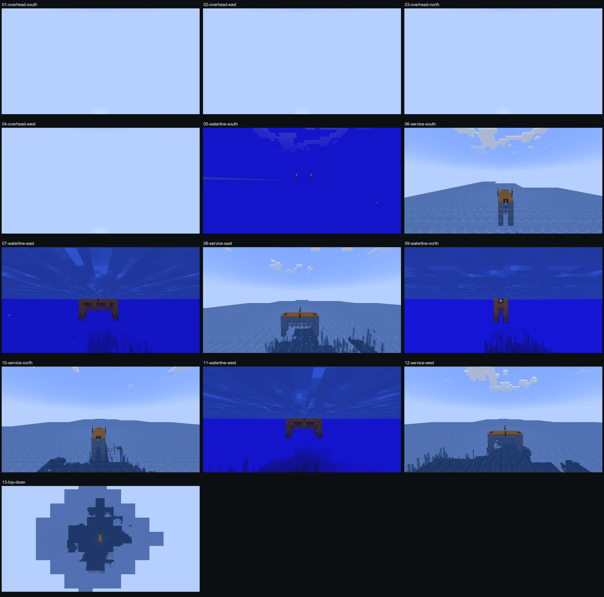SUPERSEDEDSuperseded Transition — Main Straight v1Replaced by Main Straight v2 after all-angle review exposed its strip-like silhouette and mechanical repetition.
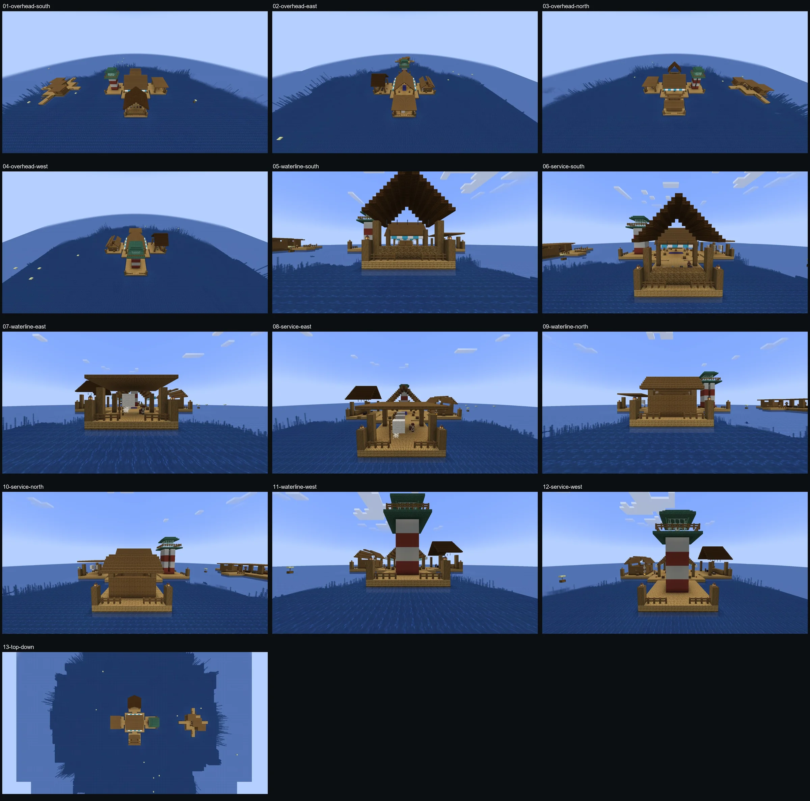REJECTEDRejected Monostructure — 13-Angle ReviewRejected production geometry. Retained only as pipeline and comparison evidence.
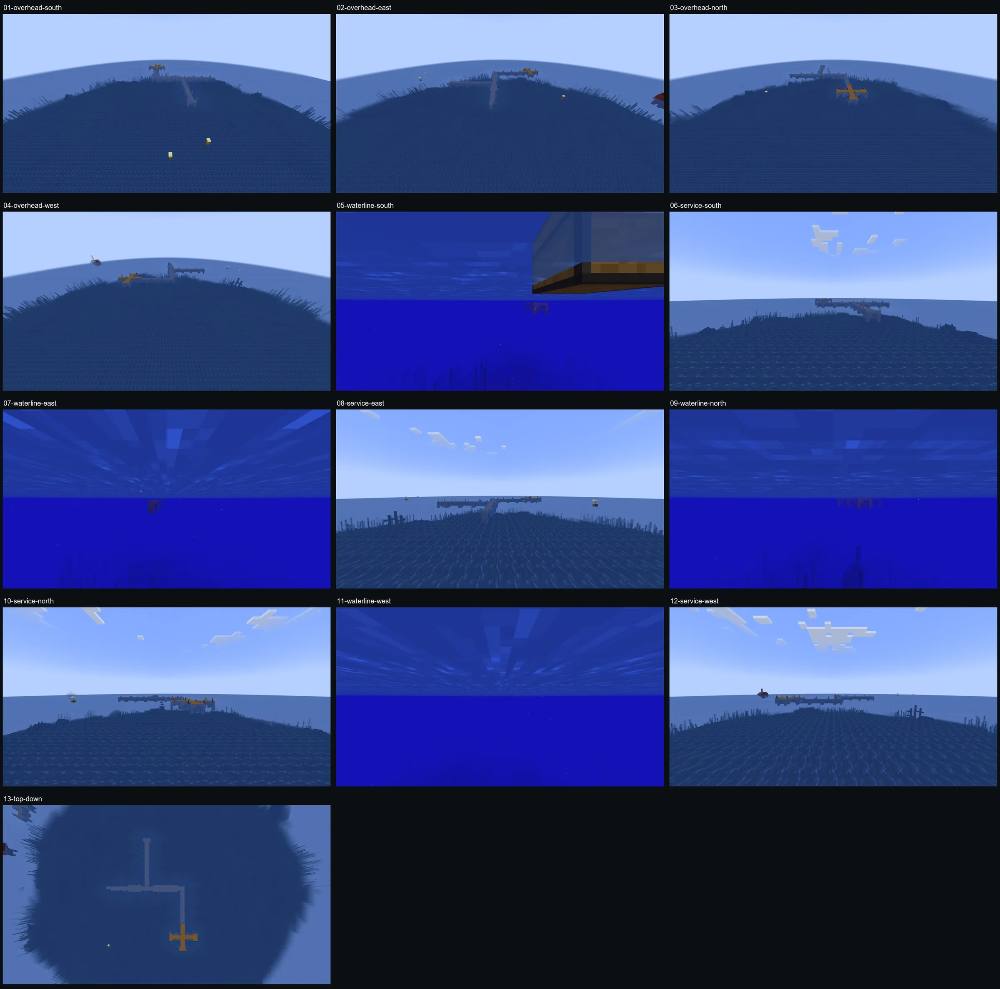REJECTED GRAMMARRejected Recursive Grammar — Seed 12345The self-recursive pool graph was rejected after adversarial review. This is not the current v2 grammar.
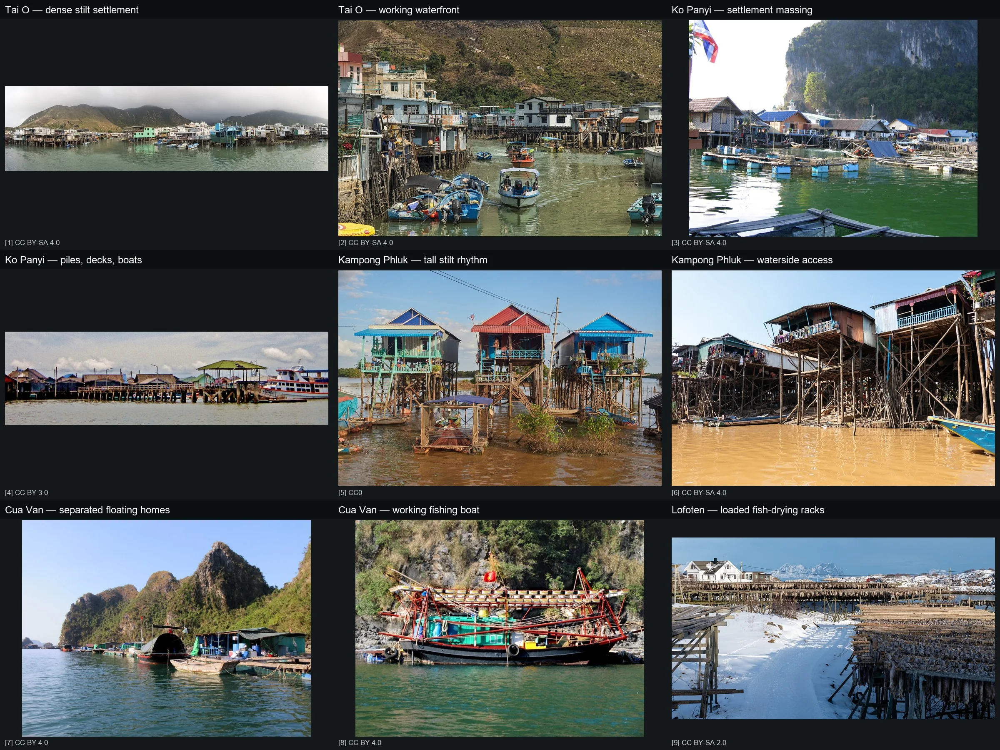REFERENCEFishing Village Architecture ReferencesReal-world massing, waterline, support and work-infrastructure references.